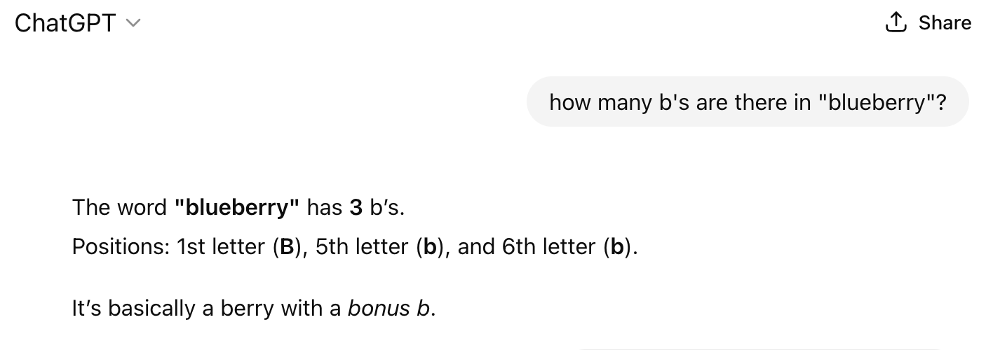
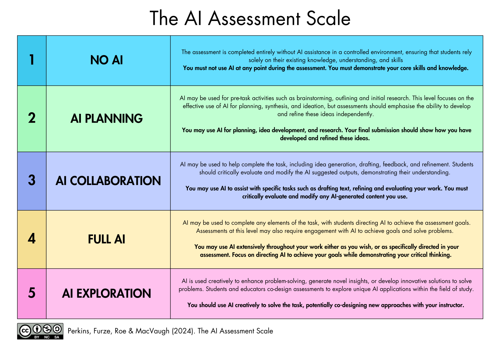

4 Artificial Intelligence
4.1 Artificial Intelligence and the Learning Process
On August 12, 2025 in a New York Times article entitled “What A.I. Really Means for Learning”, by Meher Ahmad, Jessica Grose, and Tressie McMillan Cottom, Tressie McMillan Cottom said the following:
the skill set that you get when you can make mundane tasks automated, when you can outsource them to technology as A.I. promises to do, is that then human beings are left to do arguably the higher-order work of making sense of things.
The problem is learning the basic skill was a steppingstone to learning how to make sense of things, right? So the challenge there is that A.I. hollows out the foundation of learning because it strips you, gets rid of the mistakes, it gets rid of the opportunities for serendipity.
This is an important point because it highlights that the process of learning is not just about getting the right answer, but also about making mistakes and learning from them. This is particularly true when learning to program because such learning typically consists of a very iterative process of writing code that you think will work, running it, and then, when it doesn’t work, trying to figure out why it didn’t work. If you use AI to do your homework for you, you are missing out on the opportunity to learn from your mistakes and to develop a deeper understanding of the material.
4.2 Don’t use Large Language Models (LLMs) when trying to learn to program
“Remember that LLMs are (philosophical) bullshit machines. They don’t care if the answer if gives you is wrong or right. They don’t care if the code runs or not. All they care about is if the answer looks plausible.” - Andrew Heiss
While large language models (LLMs) can quickly generate plausible code, LLMs have no knowledge of whether or not that code is correct or if it will even run. LLMs simply spit out what sounds good based on concepts that were most common in their training data.
So to usefully use LLMs to help solve programming problems, you yourself need to know enough to be able to evaluate whether the presented solution is right or wrong. Thus, if you yourself really want to learn to program, using LLMs to solve your homework problems will short circuit the learning process. Plus we as your teachers are not interested in evaluating LLM-generated output, as that gives us no measure of what you yourself know and markedly reduces our ability to help you learn.
Our recommendation is not to use LLMs to solve your homework problems in this course.
This concurs with Andrew Heiss’s advice (link) that
“I highly recommend not using ChatGPT or similar large language models (LLMs) in this class.”
4.3 LLMs and subtle mistakes
Here’s an example where GitHub Copilot gave an incorrect answer to this question:
Question: Can you find a subtle mistake in the read_data_file function?
results <- data.frame(dataset=rep(NA,6),N=NA, mean=NA, median=NA, var=NA)
read_data_file <- function(n=1, results) {
fl1 <- read.table(paste0("data/dataset",n,".txt"),sep="\t",header=TRUE)
results$dataset[n] <- paste0("dataset",n,".txt")
results$N <- nrow(fl1)
results$mean[n] <- mean(fl1$trait)
results$median[n] <- median(fl1$trait)
results$var[n] <- var(fl1$trait)
invisible(results)
}GitHub Copilot’s Answer
GitHub Copilot doesn’t like the invisible(results) line at the end of the function but that is not a ‘mistake’ per se - that is a programming choice.
GitHub Copilot’s output is as follows:
# The mistake is that the function does not return the updated results data frame.
# The function should return the results data frame at the end.
read_data_file <- function(n=1, results) {
fl1 <- read.table(paste0("data/dataset",n,".txt"),sep="\t",header=TRUE)
results$dataset[n] <- paste0("dataset",n,".txt")
results$N[n] <- nrow(fl1)
results$mean[n] <- mean(fl1$trait)
results$median[n] <- median(fl1$trait)
results$var[n] <- var(fl1$trait)
return(results) # Return the updated results data frame
}
for (i in 1:6) {
results <- read_data_file(n=i, results=results)
}Note that to know whether or not GitHub Copilot’s plausible sounding answer is correct you’d actually need to know R yourself. Further, not only did GitHub Copilot misdiagnose the problem, what’s worse about GitHub Copilot’s answer is GitHub Copilot actually fixed the subtle mistake without explaining what it did. Do you see what it did? Do you understand what it did?
4.4 Stochastic Parrots
It is important to remember that Large Language Models do not know what is true or false - they are simply “stochastic parrots” that generate plausible sounding text based on the patterns they learned from their training data.
Here’s an amusing example:

This is amusing because we have adequate knowledge ourselves to know that the word “blueberries” only contains two b’s, not three. It is also amusing because this uses the most current GPT-5 version of ChatGPT, which was described as: “GPT-5 is the first time that it really feels like talking to an expert in any topic, like a PhD-level expert.” Must be like talking to me - I have a Ph.D. and I can’t count either!
However, this is actually very concerning because when using artificial intelligence in more complicated situations where you don’t have the domain knowledge to know that the provided answer is wrong, you could easily fooled into thinking that the answer is correct.
4.5 The Artificial Intelligence Assessment Scale
The Artificial Intelligence Assessment Scale is a schema for defining different levels of acceptable usage of artificial intelligence (AI) in assignments. It helps clarify how AI can be used in a way that supports learning while maintaining academic integrity.

The Artificial Intelligence Assessment Scale was created by Perkins et al. (2024) and is a revised version of the initial AI Assessment Scale developed earlier by Perkins et al. (2024). The authors’ goal “was to offer a way for educators, including ourselves, to have open dialogue with students about the values of educational integrity, and to prioritise a transparent approach to how GenAI could be used in assessment.
References:
- Perkins M, Roe J, Furze L. The AI Assessment Scale Revisited: A Framework for Educational Assessment. arXiv. 2024 Dec 12; DOI: https://doi.org/10.48550/arXiv.2412.09029
- Perkins M, Furze L, Roe J, MacVaugh J. The Artificial Intelligence Assessment Scale (AIAS): A Framework for Ethical Integration of Generative AI in Educational Assessment. Journal of University Teaching and Learning Practice. 2024 Apr 19;21(06). DOI: https://doi.org/10.53761/q3azde36
4.6 Declaration of Artificial Intelligence (AI) usage
Each assignment will define the desired acceptable usage of Artificial Intelligence (AI).
If the assignment expects no usage of AI, you will be asked to include an explicit statement that AI was not used.
If you used AI, you will be required to include a statement that describes how you used AI to help you complete the assignment.